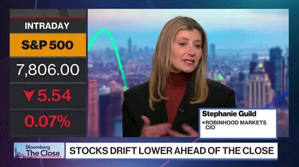
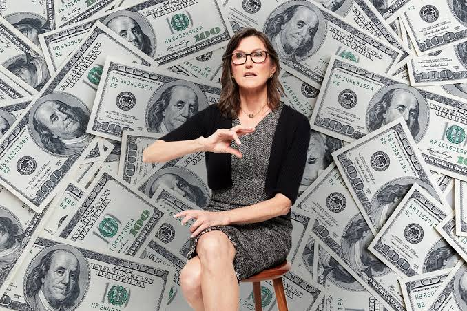
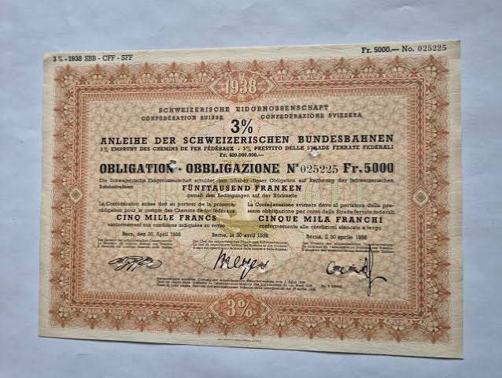
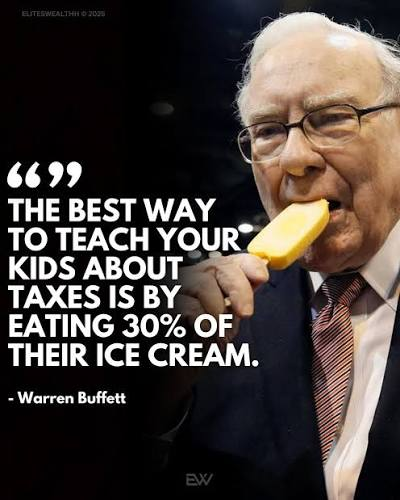

What can you invest in?
- Stocks/Shares: Own part of a company

Indexes: A small piece of all the most traded companies. S&P 500, OBX 25
Actively managed fund: A professional investor tries to make more than the index. On average they fail. They charge a fee for trying.
Bonds - Lend money to a government or company, they pay interest.
What should you do?
- Look at what Buffet, or Oljefondet does. Ask around..

For most, investing every month, in index funds.- Steady saving is better than gifts, bonus or inheritance.
- If you invest 10,000 USD tomorrow, you bet that tomorrow is a good day to buy. Is it?
Why doesn't everyone just buy index funds?
- Fun - you could buy Cheesecake Factory.
- Watch out! If it goes up 10% but the index is up 15%, Your win was a loss.
- Ethics - maybe you don't want to give any money to a certain company.
- That's tricky for normal people though - you can't easily buy S&P 500 minus one company.
Emotions
You invest sensibly but they go down. Terrible?
- Buy something for 100.
- Now it's 60. So it's cheap. Buy more.
- When it goes back up above 100, you'll have more profit than if it just kept climbing.
- Watch out for other emotions.
Hope makes you hold onto something that lost value. Would you buy it today?
Conclusion
- Automatically invest every month, index funds. 15% of your wages?
- As cheaply as possible - minimum fees, and expenses in the funds.
- But.. taxes are complicated, so I think you should start with https://www.nordnet.no/ as they handle tax automatically.